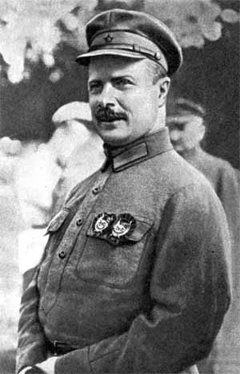

Игра №34
Тип игры: Закрытая
Описание: Проводит команда
Принадлежности: 1. 2 автомобиля.
2. Фонарик.
3. Сотовый телефон.
4. Доступ в Интернет.
5. Цифровой фотоаппарат.
6. Детский чепчик, слюнявчик и пеленка.
7. Английские булавки
8. Резиновые сапоги
9. Клей.
10. Ножницы
11. Бумага A4 (несколько листов)
12 Ватман
13. Маркер или фломастер
14. Все для шашлыка (мясо, пиво и т.д.)
| Место | Команда | Уровней пройдено | Время уровней | Всего | |
|---|---|---|---|---|---|
| Активного | Штрафы | ||||
| 1 | dirty | 11 | 07:25:58 | -15 | 07:10:58 |
| 2 | НЕЗВЁЗДЫ | 11 | 07:59:37 | -8 | 07:51:37 |
| 3 | StalkerS | 11 | 08:08:41 | 0 | 08:08:41 |
| 4 | SpeedForce | 11 | 08:54:51 | 0 | 08:54:51 |
| 5 | Йокодзуны | 11 | 09:23:28 | 0 | 09:23:28 |
| 6 | G.O.P. Style | 11 | 10:10:29 | 0 | 10:10:29 |
| 7 | Понятия не имею | 11 | 10:15:51 | 30 | 10:45:51 |
| 8 | InlineGroup | 11 | 10:54:07 | 0 | 10:54:07 |
| 9 | Ктоздесь! | 11 | 28:03:48 | 30 | 28:33:48 |
| 1 | 2 | 3 | 4 | 5 | 6 | 7 | 8 | 9 | 10 | 11 | ||
| 1 | Ктоздесь! 21:09:13 | dirty 22:27:55 | dirty 23:21:35 | dirty 23:34:31 | dirty 00:06:57 шт. -15 мин. | dirty 00:42:18 | dirty 01:19:48 | dirty 01:55:07 | dirty 02:37:38 | dirty 03:02:30 | dirty 03:25:58 | 1 |
| 2 | StalkerS 21:10:03 | НЕЗВЁЗДЫ 22:30:56 | НЕЗВЁЗДЫ 23:48:18 | НЕЗВЁЗДЫ 00:07:50 | НЕЗВЁЗДЫ 00:32:42 шт. -8 мин. | НЕЗВЁЗДЫ 01:13:01 | НЕЗВЁЗДЫ 01:56:46 | НЕЗВЁЗДЫ 02:25:35 | НЕЗВЁЗДЫ 03:13:37 | НЕЗВЁЗДЫ 03:45:35 | НЕЗВЁЗДЫ 03:59:37 | 2 |
| 3 | dirty 21:14:42 | StalkerS 22:32:04 | StalkerS 00:02:39 | StalkerS 00:27:12 | StalkerS 00:40:54 | StalkerS 01:23:46 | StalkerS 02:35:16 | StalkerS 03:11:14 | StalkerS 03:27:34 | StalkerS 03:47:13 | StalkerS 04:08:41 | 3 |
| 4 | НЕЗВЁЗДЫ 21:14:51 | Йокодзуны 22:46:28 | Йокодзуны 00:22:46 | Йокодзуны 00:49:59 | Йокодзуны 01:05:55 | Ктоздесь! 01:57:13 | Ктоздесь! 02:50:03 | SpeedForce 03:26:10 | SpeedForce 03:47:02 | SpeedForce 04:14:55 | SpeedForce 04:54:51 | 4 |
| 5 | InlineGroup 21:21:35 | Ктоздесь! 22:47:30 | InlineGroup 00:23:03 | SpeedForce 00:51:27 | SpeedForce 01:11:52 | SpeedForce 01:59:41 | SpeedForce 02:52:24 | Ктоздесь! 03:56:43 | Йокодзуны 04:40:40 | Йокодзуны 04:57:33 | Йокодзуны 05:23:28 | 5 |
| 6 | SpeedForce 21:21:38 | SpeedForce 22:49:50 | Ктоздесь! 00:24:47 | Ктоздесь! 01:01:24 | Ктоздесь! 01:14:26 | Йокодзуны 02:08:59 | Йокодзуны 03:35:08 | Йокодзуны 04:15:19 | Ктоздесь! 04:52:13 | G.O.P. Style 05:30:09 | G.O.P. Style 06:10:29 | 6 |
| 7 | Понятия не имею 21:22:04 | InlineGroup 22:50:30 | SpeedForce 00:26:54 | InlineGroup 01:02:57 | InlineGroup 01:32:05 | InlineGroup 02:24:52 | InlineGroup 03:39:16 | G.O.P. Style 04:54:08 | InlineGroup 05:08:55 | Ктоздесь! 05:34:08 | Понятия не имею 06:15:51 | 7 |
| 8 | Йокодзуны 21:22:21 | Понятия не имею 22:59:26 | Понятия не имею 01:00:09 timeout. 30 мин. | G.O.P. Style 01:22:04 | G.O.P. Style 01:41:30 | Понятия не имею 03:11:31 | G.O.P. Style 04:00:39 | InlineGroup 04:55:38 | G.O.P. Style 05:08:57 | InlineGroup 05:44:37 | InlineGroup 06:54:07 | 8 |
| 9 | G.O.P. Style 21:22:31 | G.O.P. Style 23:20:47 | G.O.P. Style 01:05:57 | Понятия не имею 01:36:41 | Понятия не имею 02:01:31 | G.O.P. Style 03:12:13 | Понятия не имею 04:15:26 | Понятия не имею 05:05:20 | Понятия не имею 05:42:55 | Понятия не имею 05:45:41 | Ктоздесь! 00:03:48 timeout. 30 мин. | 9 |
| 1 | 2 | 3 | 4 | 5 | 6 | 7 | 8 | 9 | 10 | 11 |
Уровень 1.
| № | Команда | Старт | Завершение | Штраф | Продолжительность | Бонусы |
|---|---|---|---|---|---|---|
| 1 | Ктоздесь! | 19:59:59 | 21:09:13 | 69:14 | ||
| 2 | StalkerS | 20:00:02 | 21:10:03 | 70:01 | ||
| 3 | dirty | 20:00:02 | 21:14:42 | 74:40 | ||
| 4 | НЕЗВЁЗДЫ | 20:00:00 | 21:14:51 | 74:51 | ||
| 5 | SpeedForce | 20:00:04 | 21:21:38 | 81:34 | ||
| 6 | InlineGroup | 19:59:58 | 21:21:35 | 81:37 | ||
| 7 | Понятия не имею | 19:59:57 | 21:22:04 | 82:07 | ||
| 8 | Йокодзуны | 20:00:03 | 21:22:21 | 82:18 | ||
| 9 | G.O.P. Style | 20:00:04 | 21:22:31 | 82:27 |
Задание Полевое :
Ловля на живца.
На улицах Москвы орудует банда похитителей детей. Нам удалось узнать место их следующего преступления: от города на этой старой улице с принцессой до «драгоценного» переулка. Вам необходимо, перевоплотившись в младенца (чепчик, слюнявчик, подгузник) привлечь внимание похитителей, рассказав историю о том, как вы потерялись, и уговорить найти ваших родителей.

Уровень 2.
| № | Команда | Старт | Завершение | Штраф | Продолжительность | Бонусы |
|---|---|---|---|---|---|---|
| 1 | dirty | 21:14:42 | 22:27:55 | 73:13 | ||
| 2 | НЕЗВЁЗДЫ | 21:14:51 | 22:30:56 | 76:05 | ||
| 3 | StalkerS | 21:10:03 | 22:32:04 | 82:01 | ||
| 4 | Йокодзуны | 21:22:21 | 22:46:28 | 84:07 | ||
| 5 | SpeedForce | 21:21:38 | 22:49:50 | 88:12 | ||
| 6 | InlineGroup | 21:21:35 | 22:50:30 | 88:55 | ||
| 7 | Понятия не имею | 21:22:04 | 22:59:26 | 97:22 | ||
| 8 | Ктоздесь! | 21:09:13 | 22:47:30 | 98:17 | ||
| 9 | G.O.P. Style | 21:22:31 | 23:20:47 | 118:16 |
Задание Полевое :
Погоня.
Перехвачена радиограмма: «Этот человек благородных кровей, отдыхая летом от важных дел, поднимаясь к себе домой после приема водных процедур мог видеть ЭТО у себя под ногами. Фамилию его вам подскажут координаты (52º 58’ с.ш., 35º 44’ в.д.)». Наш секретный агент оставит вам наводящий код, найдите его и подставьте сюда www.cxmoscow.ru/game/34/<код>.txt.
Задание Координаторское :
1. Вспомните литературные произведения, в которых встречаются перечисленные ниже персонажи. Посчитайте, сколько из этих произведений было опубликовано после 1850 года и сколько до этого года; вычтя из первого числа второе, получите количество цифр после запятой в числе x = π+e. Эти цифры - первая часть ответа.
• Татьяна Дмитриевна Ларина.
• Мария Николаевна Болконская.
• Макар Нагульнов.
• Артемий Филиппович Земляника.
• Андрей Иванович Штольц.
• Аркадий Николаевич Кирсанов.
• Алексей Иванович Швабрин.
• Пелагея Ниловна Власова.
• Петя Бачей.
2. Вторая часть ответа состоит из 7 букв. Первые шесть – это первые буквы синонимов следующих слов: баловаться, мрак, обладать, лукавить, кушать, фаворит. Последняя буква второй части ответа это последняя буква в названии реки, протекающей в 100 метрах от точки с координатами 50 градусов северной широты, 36 градусов 15 минут восточной долготы.
Формат ответа: сх+первая часть+вторая часть.
Произведения:
• Евгений Онегин.
• Война и Мир.
• Поднятая Целина.
• Ревизор.
• Обломов.
• Отцы и Дети.
• Капитанская Дочка.
• Мать
• Белеет Парус Одинокий.
Часть 2.
Первые три синонима:
Шалить, тьма, иметь.
Город Харьков.
До 1850 – 6 произведений, после – 3. x= 5,859799.
Часть 2.
Последние три синонима – хитрить, есть, любимец.
Уровень 3.
| № | Команда | Старт | Завершение | Штраф | Продолжительность | Бонусы |
|---|---|---|---|---|---|---|
| 1 | dirty | 22:27:55 | 23:21:35 | 53:40 | ||
| 2 | НЕЗВЁЗДЫ | 22:30:56 | 23:48:18 | 77:22 | ||
| 3 | StalkerS | 22:32:04 | 00:02:39 | 90:35 | ||
| 4 | InlineGroup | 22:50:30 | 00:23:03 | 92:33 | ||
| 5 | Йокодзуны | 22:46:28 | 00:22:46 | 96:18 | ||
| 6 | SpeedForce | 22:49:50 | 00:26:54 | 97:04 | ||
| 7 | Ктоздесь! | 22:47:30 | 00:24:47 | 97:17 | ||
| 8 | G.O.P. Style | 23:20:47 | 01:05:57 | 105:10 | ||
| 9 | Понятия не имею | 22:59:26 | 01:00:09 | timeout 30 | 150:43 |
Задание Полевое :
Поиск
Один из этапов подготовки настоящего ребенка-шпиона это игра в прятки. И сегодня они спрятались особенно хорошо. Этот “новый” проспект тянется через 3 станции метро. Начинается от улицы, получившей свое название в 1957 году. Одна из упомянутых станций метро открыта 17 января. Количество этих садов на зашифрованной улице - Na (по таблице). Вам нужно найти три из них. Помогут это сделать папы: Бенедикт VII, Урбан VI и Пасхалий II. У калитки каждого сада вы найдете число. Их сумма даст номер маршрута автобуса возле крайней остановки которого, у закрытого выхода метро, вы найдете “пропавших детей”. Для успешного завершения поиска Вам понадобится отличная память (лучше цифровая).
Формат ключа
cх+число у первого упомянутого сада + число у второго упомянутого сада + число у третьего упомянутого сада + код, который “скажут” вам “дети”.
Остановка - Битцевский рынок.
Пляшущих человечков Артура Конан-Дойля можно поискать в библиотеке.
Задание Координаторское :
Послушайте веселую песенку.
Формат кода: сх + (количество не упомянутых станций на #00FF00 линии – количество не упомянутых станций на #FFFF00 линии)*4532-345 + первые буквы названий не упомянутых станций на #FFFF00 линии, начиная из центра (если название из двух слов учитывается только первое).
Уровень 4.
| № | Команда | Старт | Завершение | Штраф | Продолжительность | Бонусы |
|---|---|---|---|---|---|---|
| 1 | dirty | 23:21:35 | 23:34:31 | 12:56 | ||
| 2 | G.O.P. Style | 01:05:57 | 01:22:04 | 16:07 | ||
| 3 | НЕЗВЁЗДЫ | 23:48:18 | 00:07:50 | 19:32 | ||
| 4 | SpeedForce | 00:26:54 | 00:51:27 | 24:33 | ||
| 5 | StalkerS | 00:02:39 | 00:27:12 | 24:33 | ||
| 6 | Йокодзуны | 00:22:46 | 00:49:59 | 27:13 | ||
| 7 | Понятия не имею | 01:00:09 | 01:36:41 | 36:32 | ||
| 8 | Ктоздесь! | 00:24:47 | 01:01:24 | 36:37 | ||
| 9 | InlineGroup | 00:23:03 | 01:02:57 | 39:54 |
Задание Полевое :
Осмотр
Его придумал Александр, утвердил Николай, спроектировал Александр, а строили этот храм аж два Александра и Николай... Потом его уничтожил Иосиф, но Борис воссоздал заново. Встаньте напротив него посередине реки на мосту и читайте невооруженным глазом от месяца до первой звезды через правое плечо.
Формат ключа: сх + первые буквы прочитанных слов(ключ состоит из латинских и русских слов).
Задание Координаторское :
Пока экипажи читают, слушайте. Да, обратите внимание на это:
Весь мир на голове стоит.
Мы ходим вверх ногами.
И не один стрелок убит
В лесу тетеревами.
Уровень 5.
| № | Команда | Старт | Завершение | Штраф | Продолжительность | Бонусы |
|---|---|---|---|---|---|---|
| 1 | Ктоздесь! | 01:01:24 | 01:14:26 | 13:02 | ||
| 2 | StalkerS | 00:27:12 | 00:40:54 | 13:42 | ||
| 3 | Йокодзуны | 00:49:59 | 01:05:55 | 15:56 | ||
| 4 | НЕЗВЁЗДЫ | 00:07:50 | 00:32:42 | шт. -8 | 16:52 | |
| 5 | dirty | 23:34:31 | 00:06:57 | шт. -15 | 17:26 | |
| 6 | G.O.P. Style | 01:22:04 | 01:41:30 | 19:26 | ||
| 7 | SpeedForce | 00:51:27 | 01:11:52 | 20:25 | ||
| 8 | Понятия не имею | 01:36:41 | 02:01:31 | 24:50 | ||
| 9 | InlineGroup | 01:02:57 | 01:32:05 | 29:08 |
Задание Полевое :
Розыск
Преступники скрылись на автомобиле. Из показаний свидетелей стало ясно, что номер автомобиля содержит буквы С и Х. Разыщите такой автомобиль и сфотографируйтесь на фоне его номера с плакатом «Их разыскивает милиция». Фотографию предоставьте для составления фоторобота на Чистопрудный бульвар. Фотографию можно не распечатывать, главное, чтобы было отчетливо видно. Подъехав, звоните по телефону 89262210453.
Формат ответа: сх + номер на водительских удостоверениях.
На этом уровне подсказок не будет.
Задание Координаторское :
Координаторский уровень снимается.
Ключ от уровня: схпивояваборжомитаксистблондинка
Вам тем временем следует потренировать вашу безупречную логику.
1. В маленьком городке всего 5 домов: розовый, коричневый, белый, золотой и черный;
2. В каждом доме живут представители разных профессий: Таксист, Инспектор ГИБДД, Пешеход, Блондинка и Схватчик;
3. Все они уникальны - каждый курит только одну марку сигарет, пьет только один вид напитков и держит только одного домашнего зверька. Причем ни у кого эти марки, виды и зверьки не повторяются!
В Ваших поисках Вам помогут следующие подсказки:
1. В розовом доме живет Схватчик;
2. Инспектор ГИБДД держит слона;
3. Пешеход пьет только водку;
4. Коричневый дом налево от белого и ...
5. ... его обитатель пьет кофе;
6. Курильщик Явы от тоски выращивает таракана;
7. Жилец дома, находящегося в середине пьет боржоми;
8. Тот кто живет в золотом доме, курит травку;
9. Блондинка живет в первом доме;
10. Курильщик Chesterfield-a живет рядом с владельцем кота;
11. Владелец лошади живет рядом с курильщиком травки;
12. Курильщик Parliament пьет пиво;
13. Дом Блондинки - рядом с черным домом;
14. Таксист курит Сигары - вот буржуй, а?;
15. Курильщик Chesterfield-a живет рядом с тем, кто пьет воду.
Вопрос1: Что пьет Инспектор ГИБДД?
Вопрос2: Что курит Схватчик?
Вопрос3: Что пьет Схватчик?
Вопрос4: Кто держит рыбку?
Вопрос5(и самый главный!): у кого живет Котик? :)
Формат кода: сх + ответ 1+ ответ 2+ ответ3 + ответ4 + ответ 5
Уровень 6.
| № | Команда | Старт | Завершение | Штраф | Продолжительность | Бонусы |
|---|---|---|---|---|---|---|
| 1 | dirty | 00:06:57 | 00:42:18 | 35:21 | ||
| 2 | НЕЗВЁЗДЫ | 00:32:42 | 01:13:01 | 40:19 | ||
| 3 | Ктоздесь! | 01:14:26 | 01:57:13 | 42:47 | ||
| 4 | StalkerS | 00:40:54 | 01:23:46 | 42:52 | ||
| 5 | SpeedForce | 01:11:52 | 01:59:41 | 47:49 | ||
| 6 | InlineGroup | 01:32:05 | 02:24:52 | 52:47 | ||
| 7 | Йокодзуны | 01:05:55 | 02:08:59 | 63:04 | ||
| 8 | Понятия не имею | 02:01:31 | 03:11:31 | 70:00 | ||
| 9 | G.O.P. Style | 01:41:30 | 03:12:13 | 90:43 |
Задание Полевое :
Собачья работа

Между 2-ой и 3-ей улицами, названными по имени этого человека, есть место, откуда открывается прекрасный вид на место кощунственного убийства животного, описанного Тургеневым.
Задание Координаторское :
Отдохните, сыграйте в игру. Для прохождения игры необходимо включить звук.
Формат кода: сх + код для перехода на пятый уровень.
Уровень 7.
| № | Команда | Старт | Завершение | Штраф | Продолжительность | Бонусы |
|---|---|---|---|---|---|---|
| 1 | dirty | 00:42:18 | 01:19:48 | 37:30 | ||
| 2 | НЕЗВЁЗДЫ | 01:13:01 | 01:56:46 | 43:45 | ||
| 3 | G.O.P. Style | 03:12:13 | 04:00:39 | 48:26 | ||
| 4 | SpeedForce | 01:59:41 | 02:52:24 | 52:43 | ||
| 5 | Ктоздесь! | 01:57:13 | 02:50:03 | 52:50 | ||
| 6 | Понятия не имею | 03:11:31 | 04:15:26 | 63:55 | ||
| 7 | StalkerS | 01:23:46 | 02:35:16 | 71:30 | ||
| 8 | InlineGroup | 02:24:52 | 03:39:16 | 74:24 | ||
| 9 | Йокодзуны | 02:08:59 | 03:35:08 | 86:09 |
Задание Полевое :
Формулировку задания можно узнать у полевых игроков, получивших решетку и текст из камеры хранения.
Камера хранения на Киевском вокзале.
Задание Координаторское :
Решите числовой ребус - СОРОК+СОРОК+СОРОК+СОРОК+СОРОК= ДВЕСТИ.
Числовой ребус - это задача, в которой требуется расшифровать какие-то арифметические действия. Каждая цифра зашифрована своей буквой. Одинаковые буквы означают одинаковые цифры.
Пример:
РЕШИ + ЕСЛИ = СИЛЕН =>
9382 + 3152 = 12534
Формат ответа: сх + СТОСОРОК
Уровень 8.
| № | Команда | Старт | Завершение | Штраф | Продолжительность | Бонусы |
|---|---|---|---|---|---|---|
| 1 | НЕЗВЁЗДЫ | 01:56:46 | 02:25:35 | 28:49 | ||
| 2 | SpeedForce | 02:52:24 | 03:26:10 | 33:46 | ||
| 3 | dirty | 01:19:48 | 01:55:07 | 35:19 | ||
| 4 | StalkerS | 02:35:16 | 03:11:14 | 35:58 | ||
| 5 | Йокодзуны | 03:35:08 | 04:15:19 | 40:11 | ||
| 6 | Понятия не имею | 04:15:26 | 05:05:20 | 49:54 | ||
| 7 | G.O.P. Style | 04:00:39 | 04:54:08 | 53:29 | ||
| 8 | Ктоздесь! | 02:50:03 | 03:56:43 | 66:40 | ||
| 9 | InlineGroup | 03:39:16 | 04:55:38 | 76:22 |
Задание Полевое :
Миссия выполнима
В 3 года она играла на фортепьяно, в 15 поступила в университет, а в 26 стала профессором. Одна из первых миссий в восточном направлении - транспортировка «металла». У каждого из 9 кусков есть свое кодовое имя. Подготовьте секретное донесение: вырежьте нужные буквы из заголовков газет и наклейте их имена на бумагу. Привезите на место дислокации металла и позвоните по телефону 89035748789.
Задание Координаторское :
Своих детей-шпионов (полевых игроков) вы понимаете замечательно (иначе не добрались бы до этого уровня). Проверим, как вы поймете других детей.
Файл 1
Файл 2
Файл 3
Файл 4
Файл 5
Файл 6
Формат ответа: сх + первые буквы объясняемых слов
Уровень 9.
| № | Команда | Старт | Завершение | Штраф | Продолжительность | Бонусы |
|---|---|---|---|---|---|---|
| 1 | InlineGroup | 04:55:38 | 05:08:55 | 13:17 | ||
| 2 | G.O.P. Style | 04:54:08 | 05:08:57 | 14:49 | ||
| 3 | StalkerS | 03:11:14 | 03:27:34 | 16:20 | ||
| 4 | SpeedForce | 03:26:10 | 03:47:02 | 20:52 | ||
| 5 | Йокодзуны | 04:15:19 | 04:40:40 | 25:21 | ||
| 6 | Понятия не имею | 05:05:20 | 05:42:55 | 37:35 | ||
| 7 | dirty | 01:55:07 | 02:37:38 | 42:31 | ||
| 8 | НЕЗВЁЗДЫ | 02:25:35 | 03:13:37 | 48:02 | ||
| 9 | Ктоздесь! | 03:56:43 | 04:52:13 | 55:30 |
Задание Полевое :
SOS
Благодаря вашим стараниям, главари мафии ликвидированы. А их семьям и детям должно помочь государство. Найти проспект, на которой расположена одна из ответственных за это организаций вам поможет одноглазый фельдмаршал.
Для отчета найдите номер Ауди рядом с этой организацией.
Формат кода: сх + номер Ауди.
Уровень 10.
| № | Команда | Старт | Завершение | Штраф | Продолжительность | Бонусы |
|---|---|---|---|---|---|---|
| 1 | Понятия не имею | 05:42:55 | 05:45:41 | 02:46 | ||
| 2 | Йокодзуны | 04:40:40 | 04:57:33 | 16:53 | ||
| 3 | StalkerS | 03:27:34 | 03:47:13 | 19:39 | ||
| 4 | G.O.P. Style | 05:08:57 | 05:30:09 | 21:12 | ||
| 5 | dirty | 02:37:38 | 03:02:30 | 24:52 | ||
| 6 | SpeedForce | 03:47:02 | 04:14:55 | 27:53 | ||
| 7 | НЕЗВЁЗДЫ | 03:13:37 | 03:45:35 | 31:58 | ||
| 8 | InlineGroup | 05:08:55 | 05:44:37 | 35:42 | ||
| 9 | Ктоздесь! | 04:52:13 | 05:34:08 | 41:55 |
Задание Полевое :
Борьба за светлое будущее
Мафия вовлекает детей в проституцию, наркоманию, алкоголизм и другие пороки. Направляйтесь к скульптуре, осуждающей эти пороки и найдите там код. Осторожно: не увязните в площади. Будьте как дети (они бы точно быстро нашли ключ)!
Для выполнения задания залезать через ограду к скульптуре не нужно.
Уровень 11.
| № | Команда | Старт | Завершение | Штраф | Продолжительность | Бонусы |
|---|---|---|---|---|---|---|
| 1 | НЕЗВЁЗДЫ | 03:45:35 | 03:59:37 | 14:02 | ||
| 2 | StalkerS | 03:47:13 | 04:08:41 | 21:28 | ||
| 3 | dirty | 03:02:30 | 03:25:58 | 23:28 | ||
| 4 | Йокодзуны | 04:57:33 | 05:23:28 | 25:55 | ||
| 5 | Понятия не имею | 05:45:41 | 06:15:51 | 30:10 | ||
| 6 | SpeedForce | 04:14:55 | 04:54:51 | 39:56 | ||
| 7 | G.O.P. Style | 05:30:09 | 06:10:29 | 40:20 | ||
| 8 | InlineGroup | 05:44:37 | 06:54:07 | 69:30 | ||
| 9 | Ктоздесь! | 05:34:08 | 00:03:48 | timeout 30 | 1139:40 |
Задание Полевое :
Завтрак настоящего шпиона
Мы приглашаем вашу команду на Аллею Жемчуговой. Приехав, позвоните по номеру 8-901-518-0618 или 106-2789
Подсказок на этом уровне не будет.